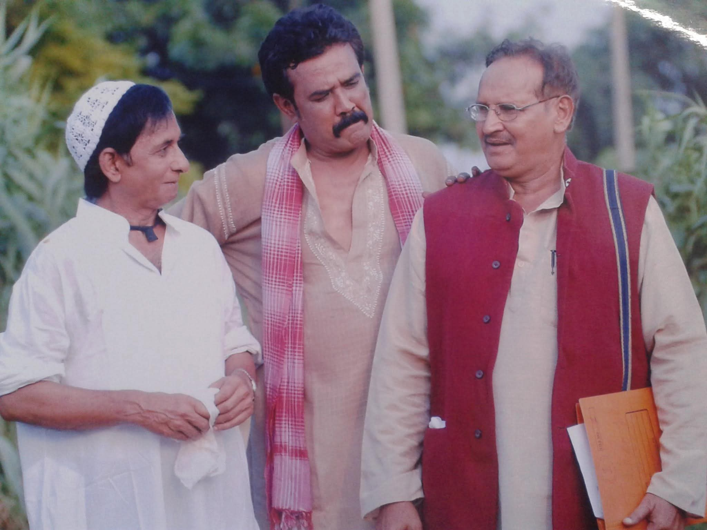
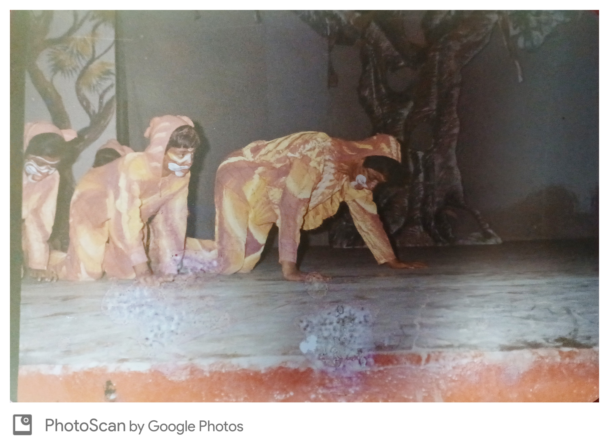
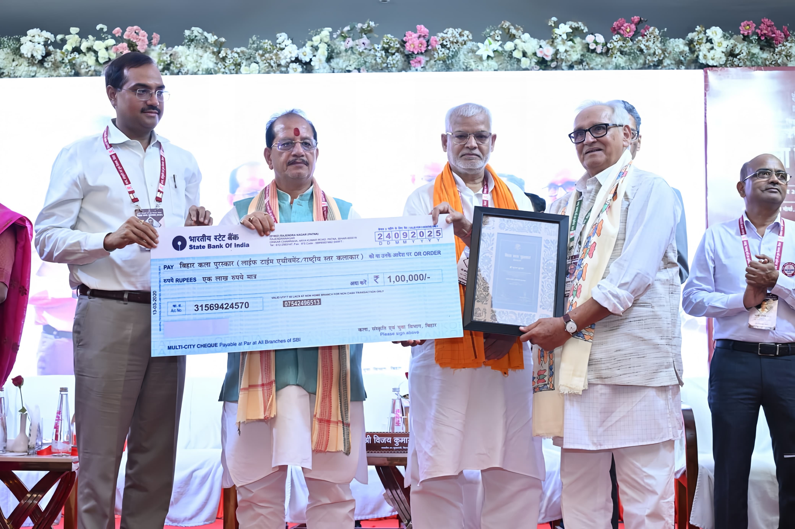
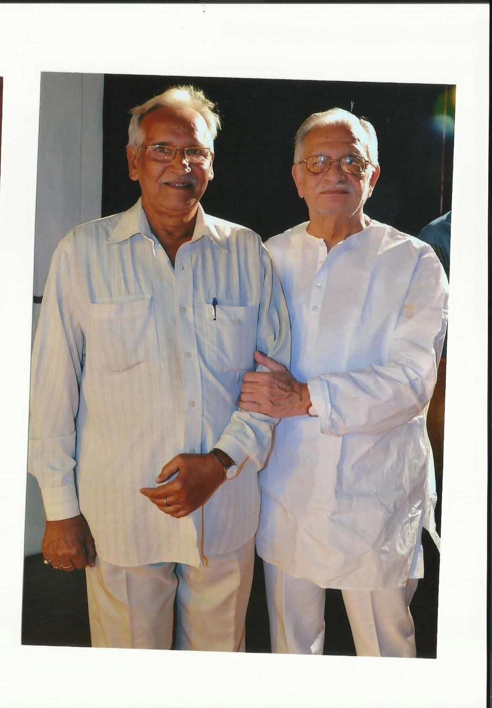

About Suman Kumar
Suman Kumar is a distinguished theatre artist, director, and cultural educator whose contributions to Indian theatre span over four decades. As a founding member and key figure of Kala Jagran, Patna, Suman Kumar has been instrumental in preserving and promoting traditional Indian theatre while innovating contemporary performance art.
Their work exemplifies the essence of "excellence plus" - not merely achieving artistic brilliance, but using theatre as a powerful medium for social change, cultural preservation, and community empowerment. Through countless productions, workshops, and cultural initiatives, Suman Kumar has touched the lives of thousands, from rural villages to international stages.
Suman Kumar began his theatrical journey in 1962, a path that has seen him become a defining figure in modern Indian theatre through his focus on regional idioms like Bhikhari Thakur's Natch format. His early dedication was further shaped by his academic pursuits, earning degrees in Science and Law before fully committing to the arts. Over more than six decades, his career reached pivotal turning points as he transitioned from stage to significant roles in national television and acclaimed films like Gandhi and Discovery of India. Today, he shares his extensive expertise in voice and acting as a mentor to new generations at the Bihar Institute of Dramatics.
The Bhikhari Thakur Legacy
Preserving Bihar's Folk Theatre Tradition: The Naach Format and Bidesia
Who was Bhikhari Thakur?
Bhikhari Thakur (1887-1971), known as the "Shakespeare of Bhojpuri," was a legendary folk playwright from Bihar. His revolutionary folk theatre form "Naach" and iconic play "Bidesia" addressed social issues.
The Government of India recognizes Bhikhari Thakur as a cultural icon and his work as Intangible Cultural Heritage of Bihar.
Suman Kumar's Contribution
Suman Kumar has been instrumental in keeping the Bhikhari Thakur tradition alive:
"Bidesia" - 50+ Performances
Directed and performed Bhikhari Thakur's masterpiece across Bihar, Jharkhand, and UP, reaching over 100,000 audience members
"Gabarghichor" Revival
Revived this lesser-known Bhikhari Thakur play, maintaining authentic Naach format and Bhojpuri dialect
Naach Format Workshops
Conducted 100+ workshops training young artists in traditional Naach performance style
Visual Documentation
[PLACEHOLDER IMAGE]
Suman Kumar in Bidesia Costume
Upload to: assets/suman-kumar/photos/bidesia-costume.jpg
[PLACEHOLDER IMAGE]
Directing Gabarghichor
Upload to: assets/suman-kumar/photos/gabarghichor-directing.jpg
Gallery of Excellence
Awards, honors, and cinematic contributions
Major Awards & Honors
Cinematic Contributions
Beyond theatre, contributions to acclaimed Indian cinema and historical television.

Gandhi (1982)
Role: Actor
Director: Richard Attenborough
Significance: Academy Award-winning biographical film.

Damul (1984)
Role: Actor
Director: Prakash Jha
Significance: National Film Award winner addressing bonded labor in Bihar.

Bharat Ek Khoj (1988)
Role: Actor
Director: Shyam Benegal
Significance: Direct adaptation of Jawaharlal Nehru's book; spans 5,000 years of Indian history.

Bheem Bhawani (1981)
Role: Actor
Director: Bishamber Khanna
Significance: A crucial show for social awareness and nation-building through storytelling.

Mirza Ghalib (1988)
Role: Actor
Director: Gulzar
Significance: A critically acclaimed biographical television series based on the legendary poet's life.

lakhera
Role: Actor
Significance: Contribution to Hindi television drama, continuing a legacy of impactful storytelling.
Testimonials & Endorsements
Reflections on a journey across airwaves, stage, and cinema.
"A stalwart of the arts whose contribution to the Bihar Culture Department transcends professional duty. His vision for the region's cultural preservation has been a guiding light for both government initiatives and grassroots artistic movements."
"On the stage, Suman Kumar doesn't just perform; he inhabits. His presence is a masterclass in the nuanced craft of the National School of Drama tradition, bringing a rare, grounded truth to every role he touches."
"सुमन जी के निर्देशन में अजबे जादू है। ऊ मगही के मिठास और देहाती संस्कृति के जे रंगे मंच पर उतारथिन है, ऊ देखला लायक रहे है। उनखर निर्देशन में नाटक खाली खेल नाय, बल्कि हमनी के आपन पहचान है।"
"एक निर्देशक के रूप में सुमन कुमार का दृष्टिकोण हमेशा कलात्मक और अनुशासित रहा है। उन्होंने हिंदी रंगमंच को नई ऊँचाइयों पर पहुँचाया है। उनके निर्देशन की सबसे बड़ी खूबी पात्रों की गहराई और कहानी की सत्यता को पकड़े रखना है।"
Impact & Legacy
A Lifetime Dedicated to the Soul of Indian Folk Theatre
Achievements & Milestones
Co-Founded Kala Jagran
Established Kala Jagran cultural organization in Patna, Bihar, creating a platform for theatre artists and cultural workers to collaborate and create meaningful art, serving as its Founder Secretary to provide a platform for modern Hindi, Magahi, Bhojpuri, and Maithili theatre.
National Recognition
Received the prestigious Sangeet Natak Akademi Amrit Award, recognizing lifetime contribution to Indian theatre. Awarded the Bihar Gaurav Award for bringing pride to Bihar through exceptional contribution to theatre.
Landmark Production
Revitalized the traditional Bhikhari Thakur Natch format, effectively bridging folk idioms with modern Indian theatre. Directed and performed in regional productions across Bihar, Jharkhand, and Uttar Pradesh.Directed the acclaimed play Zarurat Isi Ki Thee on child trafficking, which was invited to the National School of Drama's prestigious Jashne Bachpaan festival.
International Collaboration
Acted in the film Gandhi, directed by Richard Attenborough. Served as the Technical Director for the Indo-Russian Dance Festival. Received a Best Spot Presenter Award organized by AIR Patna.
Educational Initiative
Teaches acting, voice, and speech at the Bihar Institute of Dramatics. His extensive leadership record includes serving as a ChiefTrainer for state-sponsored children’s workshops since 1992 and frequentlyinter-college and inter-school theatre festivals at prestigious institutions like IIT Patna, Patna Medical College, and Magadh University.
Curriculum Vitae
Explore the distinguished professional journey of Suman Kumar. This profile chronicles a career spanning over four decades—from his masterful performances at the National School of Drama to his iconic contribution as the voice of All India Radio Patna and his significant roles in award-winning Indian cinema.
For a detailed record of filmography, theatrical direction, and broadcasting milestones:
Download Full CVPhoto Gallery
A visual journey through decades of theatrical excellence

Bargad ka saamp natak Shyam Mohan asala dwara Likhit karyshala mein taiyar kiya Gaya bacchon ka yah natak hai jo Navyug Vidyalay Bhagalpur mein hua tha iska patna durdarshan se bhi telecast Kiya Gaya

Suman Kumar was the chief trainer for a Children Theatre Workshop and served as Camp director of children theater workshop organized by nczcc Allahabad

Cordinator of International trade festival organised in new delhi

Dublicate Babu veer Kuar Singh per aadharit telephone vidroh Mein Kendriya Bhumika mein Suman Kumar

Suman Kumar performing a scene from the play Jaati Na Poocho Sadhu Ki.

Jay Prakash narayan pe aadharit ,Sampurn Kranti Silsila Jari hai ki Manchan uprant natak ki tasvir jismein vartman Bihar ke Krishi Mantri ramkripal Yadav mukhya Atithi ke rup Mein upsthit the

Lanchan Munchipremchandra ki kahani pe aadharit natak - Direction

National School of drama dwara aayojit jasne Bachpan mein Kala Jagran Patna ki prastuti jarurat ISI Ki Thi Ke Manchan uprant samvad Samman grahan Karte natak ke nirdeshak Suman Kumar

Rajgir Mahotsav Mein man sanchalan karte varishth udghoshak Suman Kumar

Rashtriy Nat Vidyalaya Nai Delhi mein manchit natak jarurat ISI ki thi ka ek Drishya nirdeshak Suman Kumar

Sharad Joshi dwara Likhit natak Ek Tha gadha usmein Kotwal ki Bhumika mein

Vaishali Mahotsav Mein vanchit natak Gopa ka ek Drishya nirdeshak Suman Kumar

Suman Kumar performing in a lively scene from the play Do Kori Ka Khel.
"Actor Suman Kumar during the filming of the Doordarshan serial 'Bheem Bhawani' with renowned film actor Ashok Kumar."

Suman Kumar receiving the prestigious Bihar Kala Puraskar (Lifetime Achievement Award) for his 50+ years of dedicated service to Indian theatre, presented by Deputy CM Vijay Kumar Sinha and officials of the Art & Culture Department.
Suman Kumar served as a prominent news reader and senior announcer for All India Radio (AIR) and Doordarshan Patna for over 15 years.
Suman Kumar directed the play Shivaji during the 11th Dr. Chaturbhuj Memorial Historical Theatre Festival, held from March 2 to March 4, 2020, at Kalidas Rangalaya, Patna.
Actor Suman Kumar in costume on the sets of the historical production Veer Kunwar Singh, directed by Prakash Jha.
Actor Suman Kumar in costume during the production of the iconic Doordarshan television series Bharat Ek Khoj (The Discovery of India).
Suman Kumar was conferred the "Bhikharee Thakur Samman (Senior)" by Jitan Ram Manjhi, the former Chief Minister of Bihar, for his lifetime contribution to theatre on behalf of the Department of Culture, Government of Bihar.
Suman Kumar directed a theatrical performance of the legendary literary work Urvashi by Ramdhari Singh Dinkar, organized in Munger under the auspices of the Department of Art, Culture, and Youth, Government of Bihar.
Suman Kumar conducting a group discussion during his tenure as a moderator and announcer at All India Radio.
Suman Kumar speaking at the Bihar Mahotsav 2014, a cultural showcase held from April 25 to April 27 at Rabindra Bhawan, New Delhi.
Suman Kumar performing in the play Maati Gaadi staged by Kala Sangam.
Suman Kumar performing as the character Abrar Khan in the play Amali.

Suman Kumar in a candid moment with legendary poet, lyricist, and director Gulzar.

Suman Kumar alongside actress Vimi (heroine of the film Hamraaz) during a shoot in Darjeeling.
Press Coverage & News Clippings
Media recognition and coverage over the years

Cultural Milestone: Indian Theatre Shines Abroad
A historic report from Bombay documenting the successful performance of Kalidasa's Shakuntala in London.
View Full Article
Today the Magic of Voice Still Remains (आज भी कायम है आवाज का जादू)
A look into the 37-year career of Suman Kumar, who believes that an announcer must speak from the heart and possess deep literary knowledge.

Need for Conservation of Dramatic Styles (नाट्य शैलियों के संरक्षण की जरूरत)
Experts discuss the legacy of Bhikhari Thakur and the debate over whether Bidesiya is a style or a specific play.
Video Gallery
Performance recordings and testimonials

Bihar Bihan | Suman Kumar (Actor & Director) | Producer- Rohini Chaudhary

Suman Kumar Receiving Sangeet Natak Akademi Amrit Award

Bihar Vihan | Suman Kumar | Producer - M prabhakar

JEEVAN HAI ANMOL Street Play By Kala Jagran | director : Suman Kumar | Street Play is based on importance of water & Plants for Life.
Voices of Support
Suman Kumar's lifelong dedication to the arts represents the transformative power of theatre in Indian society. His journey goes far beyond individual achievement; his work actively shapes our cultural landscape and continues to inspire new generations of artists and practitioners. We are currently collecting stories and endorsements to document his incredible impact.
For endorsements, testimonials, or additional information, please contact:
Email: kalajagran@gmail.com
Phone: +91 9934035237
Theatre for Change: Impact & Social Service
Beyond Performance: Using theatre as a powerful tool for social transformation
Grassroots Social Initiatives
Suman Kumar has pioneered the use of theatre for social change, conducting over 1000+ street plays throughout rural and urban Bihar. His work extends far beyond the stage, reaching into the heart of community welfare.
Suman Kumar is a veteran actor and director who has shaped regional theatre since 1962 through 1,200+ performances, 500+ radio features, and leading numerous state-sponsored workshops.
Official Recognition & Partnerships
UNICEF Certificate
Recognition for child welfare through theatre-based education
Bihar AIDS Control Society
10-year partnership for HIV/AIDS awareness across 50+ districts
Government Recognition
Bihar Culture Department commendation for social transformation